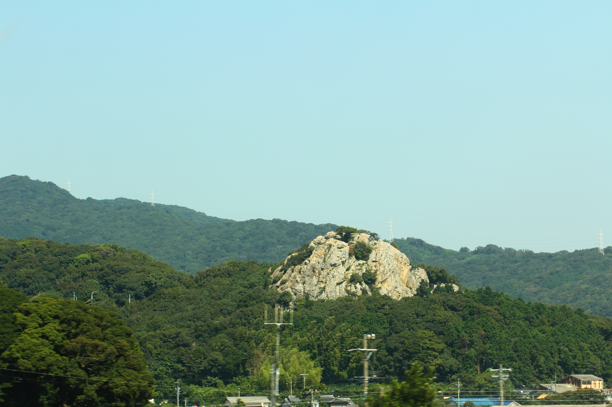
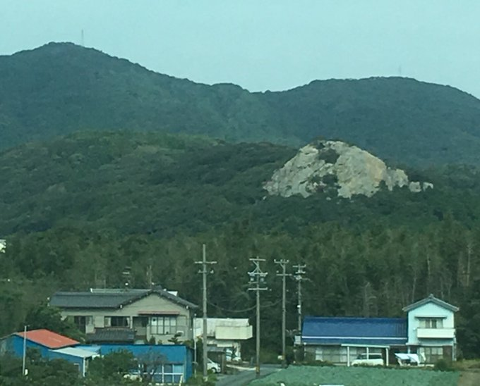
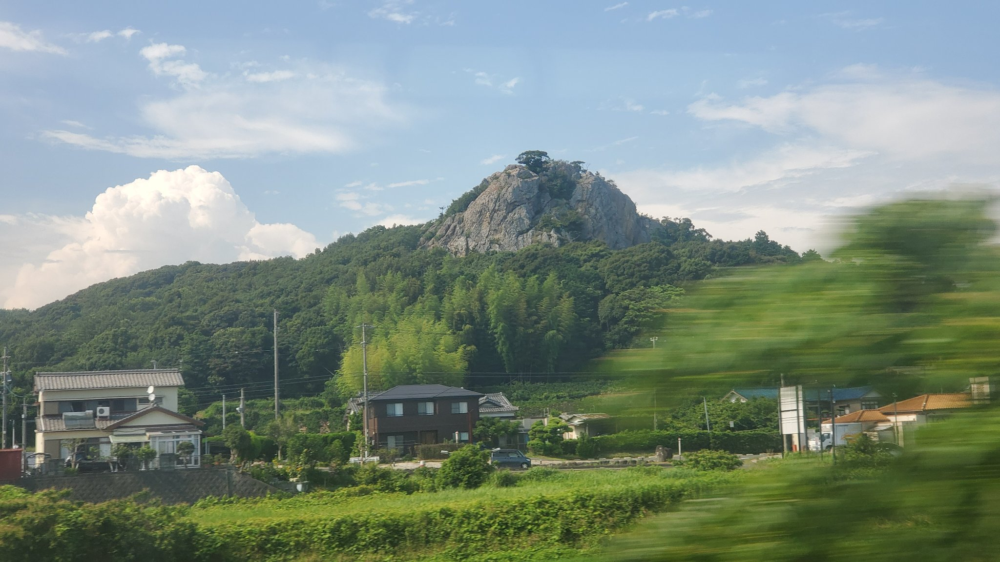

TOKAIDO SHINKANSEN WINDOW VIEW
Can you see Toyohashi Tateiwa Rock from the Shinkansen?
A standing rock after Lake Hamana.

- Section
- Hamamatsu → Toyohashi
- Seat side
- Seat E · mountain side
- Timing
- About 75 minutes after leaving Tokyo on a Nozomi train
- Photos
- 3 photos
How to find Toyohashi Tateiwa Rock
On a Shinkansen heading from Tokyo toward Osaka, shortly after Lake Hamana, a rock jutting up from a hill comes into view on the mountain side. This is Toyohashi Tateiwa. Many riders may have noticed it by chance and wondered what it was. While Lake Hamana is still fresh in memory, keep an eye on the Seat E window.
If you are traveling from Tokyo toward Shin-Osaka, start watching the Seat E · mountain side window as you approach Hamamatsu → Toyohashi. If you are traveling toward Tokyo, the order is reversed.
Why this view matters
Toyohashi Tateiwa Rock is one of the window views that make the Tokaido Shinkansen more than a transfer. The train moves fast, so visibility depends on weather, seat position, and timing.
Toyohashi Tateiwa Rock in photos

